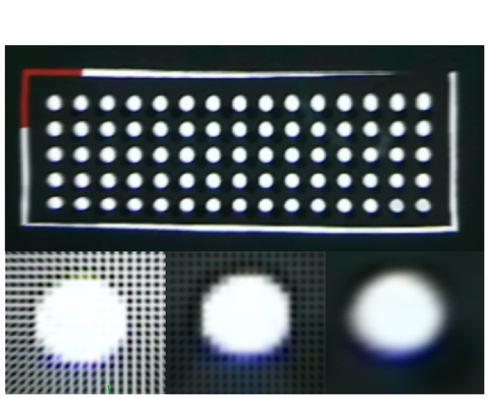

AR-HUD Cailbration.
AR-HUD work with YOLO-v8.

3DGS for Distortion Correction.

To address the issue of limited real-vehicle resources,I initiated the topic of an indoor bench AR-HUD simulation platform. This platform integrates a multi-camera system,which is used to simulate ADAS and DMS,and is calibrated through SFM.It employs a lock-free double-buffering multi-threading framework,synchronized using an EKF.The platform combines YOLO and SORT algorithms to achieve 6DOF tracking of multiple objects.It renders the scene from an AR perspective in real-time using OpenGL and projects it onto the HUD,achieving low-latency AR effects.The developed upper-level machine can quickly complete distortion correction and parameter detection,with each calibration taking only 2 minutes.The platform is capable of high-precision and low-latency sensor integration,and it outperforms real-vehicle environments in terms of data acquisition and model validation,significantly improving development efficiency.
BibTex Code Here